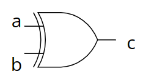
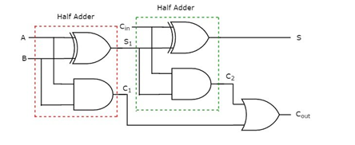

PARTHENON用HDLASIC開発に用いられる
論理演算子
| 演算子 | 記述例 | 説明 |
|---|---|---|
| ~ | ~x | xのビットを反転(NOT) |
| & | x & y | xとyのビットAND |
| | | x | y | xとyのビットOR |
| ^ | x ^ y | xとyのビットXOR |

例題1
module gexor(a,b,c);
input a,b;//入力:A,B
output c; //出力:C
assign c = a ^ b; //c は aとbのXOR
endmodule

例題2
module test(a,b,c,d,x,y,z);
input a,b,c,d;
output x,y,z;
gand gandv(a,b,x); //x = aとbのand
gexor gexor(c,d,y); // y = cとdのxor
assign z = x & ~y; //z = xと反転yのand
endmodule

fulladder.v
module fulladd(A, B, CIN, S, COUT);
input A,B,CIN;
output S,COUT;
assign S = A ^ B ^ CIN;
assign COUT (A&B) | (B&CIN) | (CIN & bA);
endmodule

フルアダーを呼び出す方法
// full adder
module adder_ripple( a, b, q );
input [3:0] a, b;
output [3:0] q;
wire [3:0] cout;
fulladd add0( a[0], b[0], 1'b0, q[0], cout[0] ); //1'b0は0bit(GND)
fulladd add1( a[1], b[1], cout[0], q[1], cout[1] );
fulladd add2( a[2], b[2], cout[1], q[2], cout[2] );
fulladd add3( a[3], b[3], cout[2], q[3], cout[3] );
endmodule

| 略称 | 正式名称 |
|---|---|
| HDL | Hardware Deseription Language |
| RTL | Resistor Trasfer Level |
| ASIC | Application Specific Integrated Circuit |
| FPGA | Field Programmable Gate Array |
| IP | Intellectual Property |
参考：(Wikiのリンク) HDL RTL ASIC FPGA IP
名前によるポート接続は次のようにする
．定義側ポート名（接続信号）
接続:
fulladd add0( a[0], b[0], 1’b0, q[0], cout[0] );
ポート接続:
fulladd add0( .Q(q[0]), .COUT(cout[0]), .A(a[0]) , .B(b[0]), .CIN( 1’b0) );
テスト回路の記述中の空欄を埋める問題
module counter( ck, res, q );
input ck, res; //入力信号
output [3:0] q; //出力信号
reg [3:0] q; //regはレジスタ型の宣言．値を保持できる記憶素子
always @( posedge ck or posedge res ) begin
/*
順序回路はalways文で記述する．
続く＠()内はbegin以下の処理を行う条件で，
posedgeは信号の立ち上がりの意味．
cｋまたはresの立ち上がりで状態が遷移する．
*/
if ( res== 1’b1 )
q <= 4’h0; //qに4bitの0を代入
else
q <= q + 4’h1;//インクリメント
end
endmodule


記述:
module
saikoro(ck,reset,enable,lamp);
input ck,reset,enable;
output [6:0] lamp;
reg [2:0] cnt;
always@(posedge ck or posedge reset)
if ( reset==1'b1 )
cnt <= 3'h1; //リセット時にcntは１にする
else if (enable==1'b1 )
if ( cnt==3'h6 )
cnt <= 3'h1; //リセット
else
cnt <= cnt + 3'h1;
end
function [6:0] dec; //decという名前の関数
input [2:0] din;
case ( din ) //1~6までの入力に対する出力を返す
3'h1: dec= 7'b0001000;
3'h2: dec= 7'b1000001;
3'h3: dec= 7'b0011100;
3'h4: dec= 7'b1010101;
3'h5: dec= 7'b1011101;
3'h6: dec= 7'b1110111;
default: dec= 7'bxxxxxxx;
endcase
endfunction
assign lamp = dec ( cnt );
endmodule